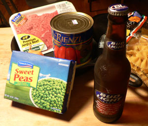

Hamburger Helper à la crème fraîche
I know what you’re thinking. It’s only my second Wednesday of guest blogging here and I’ve already slid into the depths of cooking depravity.
Last week I excitedly chose a recipe on Sunday and ordered ingredients. This week I let the FreshDirect window slip by, and every other conceivable window, until 7:30 tonight when I got home and fruitlessly emptied bookshelves looking for my Florence Henderson cookbook.
Not finding it, I considered blaming Leland and just not cooking, but then I came across an old cookbook from my college apartment. As I opened it, several handwritten recipe cards tumbled out onto the ground.
Now you’re probably thinking that I’m trying to pull some kind of Hawthorne-esque literary framing. The Custom House and all that jazz. But unlike that Nat I have photographic evidence:
Recipe for: Hamburger Helper
From the kitchen of: [my college roommate’s] Mom
- 3/4 lb. hamburger (lean)
- 1 teaspoon salt
- 1/2 teaspoon pepper
- 1 tablespoon finely chopped onion
- 1 stalk or so of celery, chopped
- 1/2 cup or so frozen peas
- fresh or 20 oz canned tomatoes
- 1/2 bag wide noodles
- parmesan cheese
Perfect.
Since I was slumming already, I ran out to Food Emporium to collect the ingredients. At the meat department I opted for a tiny flank steak over the more expensive pound of ground beef. Then I stared at a $2 bag of four enormous stalks of celery and decided not to buy too much of something that no one likes anyway. (Celery. What’s the point?)

(Beer was not called for in the recipe, but it was certainly involved in the preparation.)
Back home I cut up the steak and onions into itty bitty pieces and tossed them in the skillet. Then I combined the other ingredients, boiled the pasta, and realized that this recipe was boring as hell. Thanks, “Mom.”
So I raided the fridge and found unexpired crème fraîche (score!) and the thyme that’s been there forever. Also, a head of lettuce. I minced up the base of the lettuce, thinking it would have similar properties to celery and probably taste better.
Tossing cooked pasta and all into the skillet, I pondered the flip side of my recipe card:
Simmer 15 min. to blend flavors. I put a lid on loosely for Sminorso.
Hmm. “This is excellent weblog material,” I thought. “I shall write Sminorso in italics, followed by ‘(that’s Italian for simmer)’, or whatever it turns out to be.” Lucky me, such funny stuff falling right into my hands!
After less than 15 minutes I removed the now pleasant-smelling (thyme!) concoction from heat and plated it like hamburger helper has never been plated before.
The taste was pleasantly sharp, thanks to the thyme and crème I think. Not sure where we would have been without it. Oh, and who doesn’t like peas? Until I was ten I ate them frozen. They’re almost as good warmed up.
As I sat down to Google this mysterious “Sminorso,” I saw what I’d missed before. My motherly muse was not flaunting her Italian.
She was hedging her lid time.
Comments
Cooking depravity sure makes for funny blogging, though.
Thanks, but I’m not sure how long I can keep this shtick going. If next week’s post is headlined “Food found in dumpster not all bad,” please ignore it. Mrs. P will kill me if I scare off the serious cooks.
Ahhhh….Sminorso….
I had a good laugh and I like the coupling of hamburger helper and creme fraiche; it’s not quite foie gras with Doritos but somewhat along those lines. Sort of like Elvis singing opera.
I’m enjoying guest blogging Wednesday.
Again with the jokes! Who knew?
Eh, what’s so bad about homemade Hamburger Helper? My guilty pleasure is a variation on Hamburger Helper where you brown some ground beef and onions, add tomato sauce and pasta. I’m sure you could you shallots, homemade tomato sauce, fresh garlic, etc. to make it all fancy schmancy. But it still tastes good!
Add a comment